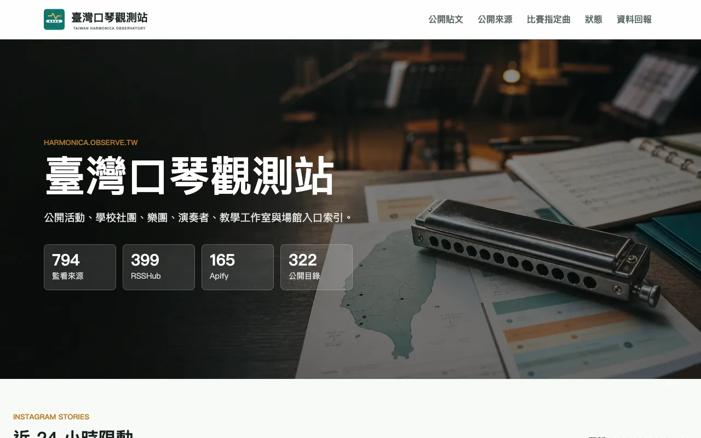
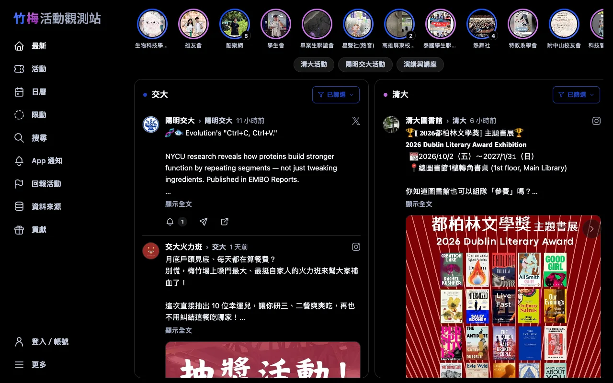
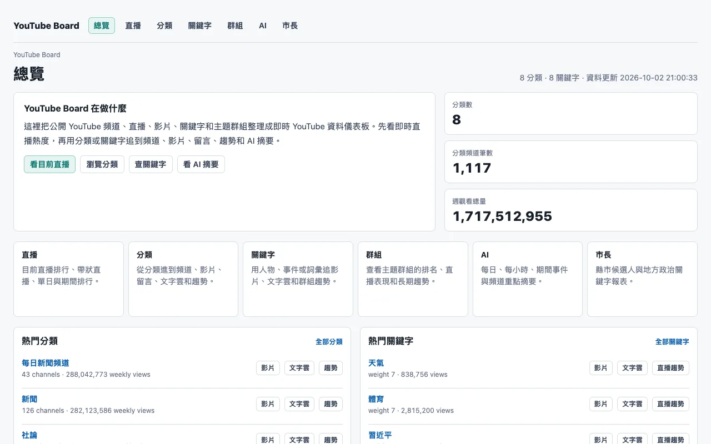
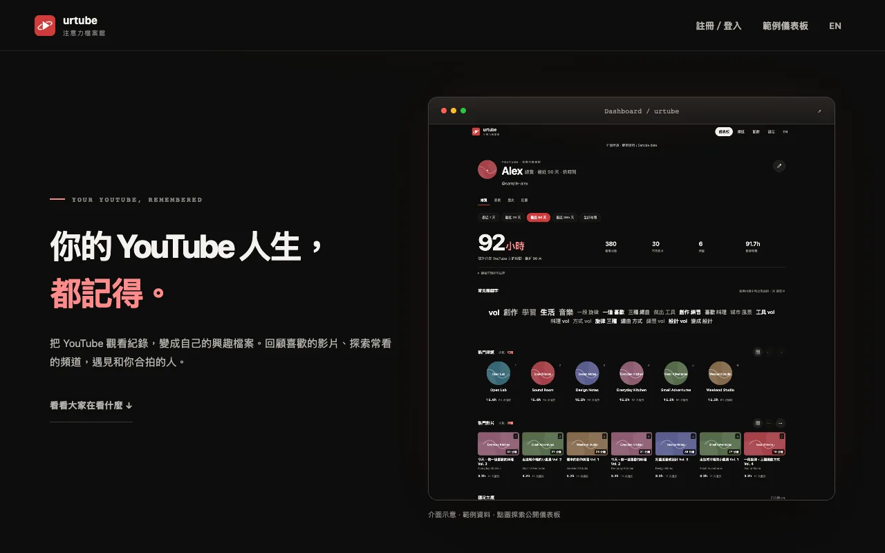

一群觀測站的集合 —— 每個子網域都是一個自動化的小系統， 持續收集、整理、公開某個值得被記錄的主題。
口琴活動、社團、演奏者與比賽指定曲索引
整理臺灣與世界各地的公開口琴資訊：活動、學生社團、樂團、演奏者、教學工作室、場館、 比賽指定曲與口琴譜源。監看近 800 個公開來源（RSSHub、Apify 與公開目錄）， 涵蓋二十多個國家的社團與演奏者。

清大 × 陽明交大校園活動貼文河道
自動彙整清華大學與陽明交通大學的社團與校方公開貼文 —— Instagram、Facebook、Threads、X 與校園公告，經 LLM 抽取活動名稱、時間與地點， 整理成可依校區、平台、活動類型與主辦單位篩選的河道。

六都市長候選人官方發文時間軸
收錄臺北、新北、桃園、臺中、臺南、高雄市長候選人的官方公開發文， 目前監看 13 位候選人、已收錄超過 3,500 則貼文，跨平台合併成單一時間軸， 並以議題自動分類統計比例。
即時 YouTube 資料儀表板
把公開 YouTube 頻道、直播、影片、關鍵字與主題群組整理成即時資料儀表板： 監看 1,100 多個頻道、8 個分類（新聞、電視台、政治光譜等）， 追蹤的週觀看總量超過 14 億次。

Your YouTube life, remembered
私人的 YouTube 注意力封存庫：每日同步 Google My Activity 的跨裝置觀看紀錄， 搭配 Chrome 擴充功能量測實際觀看秒數，加上觀看進度、頻道與 AI 主題分類， 看見自己的注意力隨時間怎麼移動。

這一頁本身也是開源的：skyhong2002/observe.tw